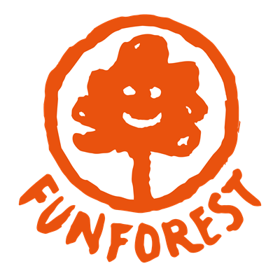

Case — Mobiele app · React Native / Expo · 2026
FunForest Seizoenskaart
Een mobiele app voor het klimbos FunForest: je digitale seizoenkaart met QR-code op je telefoon, je bezoeken bijhouden, reserveren en in één oogopslag zien of het park vandaag open is.

De aanleiding
Bezoekers met een seizoenkaart hebben een fysiek pasje nodig, willen weten of het park open is en moeten los reserveren. Alles wat op een kaartje of in een mailtje staat, hoort gewoon in een app te zitten.
Wat de app doet
- Inloggen en registreren met een activatiecode van de seizoenkaart
- Digitale seizoenkaart met een echte QR-code voor de scantoonbank
- Uniek pasnummer (FF-######), geldig tot en met 31 december van het lidmaatschapsjaar
- Dashboard met de vandaag-kaart: open of dicht, tot hoe laat, en de volgende open dag
- Reserveringen maken en je aankomende bezoeken zien
- Bezoekenteller, openingstijden en alle vier de klimbossen met locatie
Zonder losse tickets door de poort
De kaart in de app is dezelfde kaart als in je portemonnee, maar dan met een QR-code die verwijst naar de scantoonbank. Je check-in-status van vandaag staat er direct bij, zodat je niet hoeft te twijfelen of je al binnen bent.
Veilig met activatiecodes
Alleen vaste abonnementhouders kunnen een account activeren. De codes worden centraal uitgegeven en zijn standaard één keer geldig. De app kan de lijst met codes niet uitlezen: de controle gebeurt buiten de app, in de database. Zonder code sluit inschrijven automatisch, zodat er alleen nog kan worden ingelogd.
Details
- Werkt op iOS en Android, en ook in de browser
- Eigen 404-scherm met een weg terug naar het dashboard of de openingstijden
- Accounts en bezoeken blijven bewaard, dus je blijft ingelogd na verversen
- Meldingenbel met het aantal aankomende reserveringen
Resultaat
Het papieren pasje is vervangen door iets dat gasten altijd bij zich hebben. De balie hoeft geen kaarten meer te checken en gasten hoeven nergens meer naar te zoeken.
Ook een app of ledensysteem nodig?
Van digitale pas tot klantportaal: ik bouw het zo dat het werkt op de telefoon waar jouw klant hem al in heeft zitten.
Bespreek jouw app →